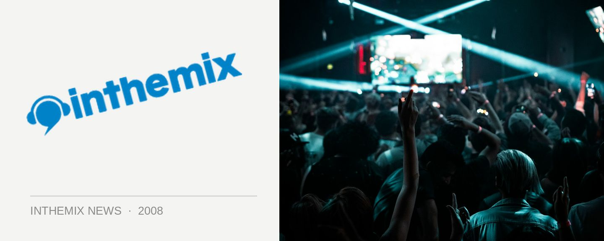

ITM Exclusive: Tiesto IS touring this April!
The rumours have been endless, but anyone looking to the skies at Melbourne’s Big Day Out yesterday were given an exciting possibility to ponder on, by the skywriting that was provocatively scrawled above the venue during the afternoon. But ITM can now confirm Tiesto WILL finally be returning to Australia!
inthemix spoke to the promoter this afternoon about the upcoming tour, and while we’re not able to reveal who’ll be bringing him out just yet, what we can confirm is that the Dutch trance enigma is 100 per cent locked for a return to Australia just in time for the Anzac Day long weekend – his first visit in four years! He’s scheduled in for a series of dates across the country in the last week of April and the first week of May, and we’ll have the full exclusive details on ITM this Friday.
2007 was a big year for Tiesto, seeing him rise back up the DJ Mag 100 poll to to the #2 spot, as well as release his new album Elements of Life, which contained the smash hit Break My Fall and also scored him a Grammy nomination. But what really turned heads was when he took his massive ‘Elements of Life’ tour on the road, tackling the US market with great success and playing to stadium crowds of up to 25,000 people. All the while, carting around three semitrailers worth of equipment to deliver the sort of visual spectacular more often associated with rock acts like U2 or Muse. Massive visual screens, extravagant lighting, live performers and more.
So how much of this will we be seeing when Tiesto returns to Australia this April? Make sure you’re back at the site on Friday to get the full scoop!
That’s right, Tiesto will be lading back in Australia this April! Check back at ITM on Friday because we’ll have the full details on the tour. Meanwhile, check out some footage from the mega ‘Elements of Life’ tour…